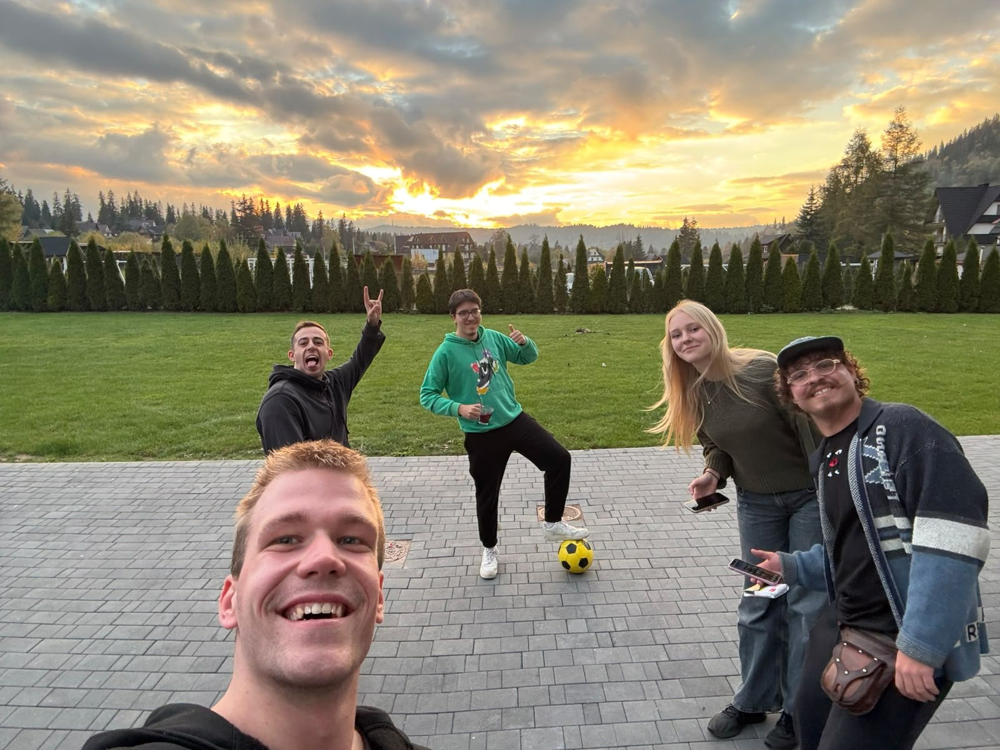
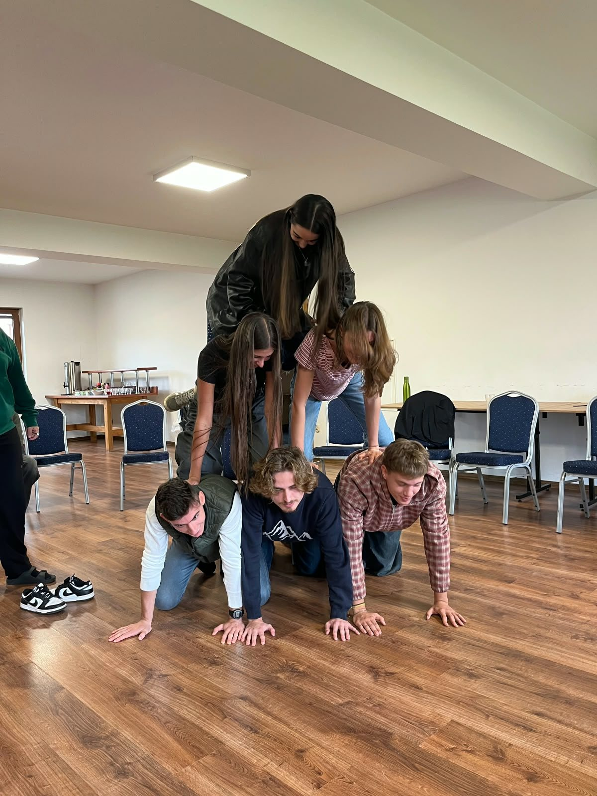
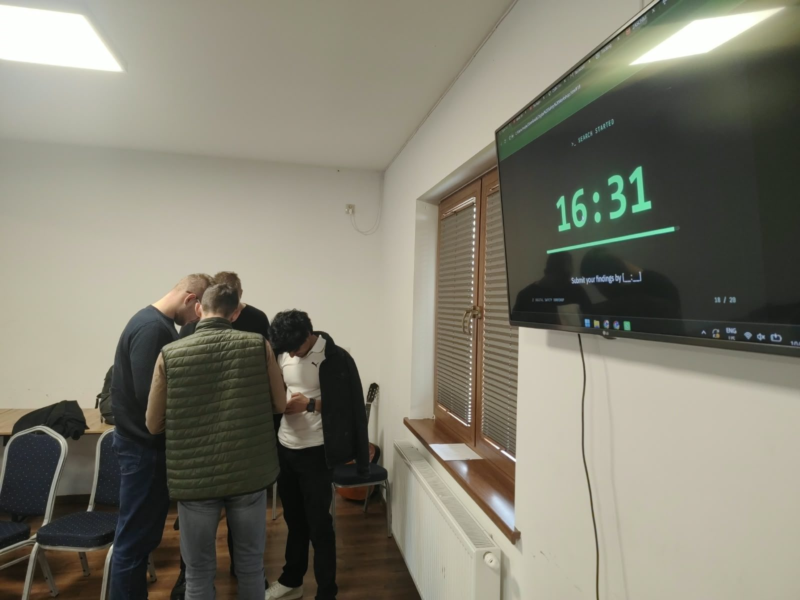
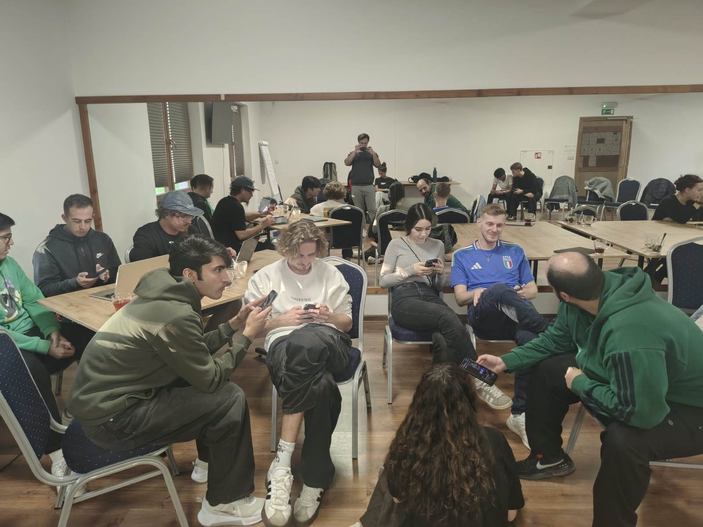
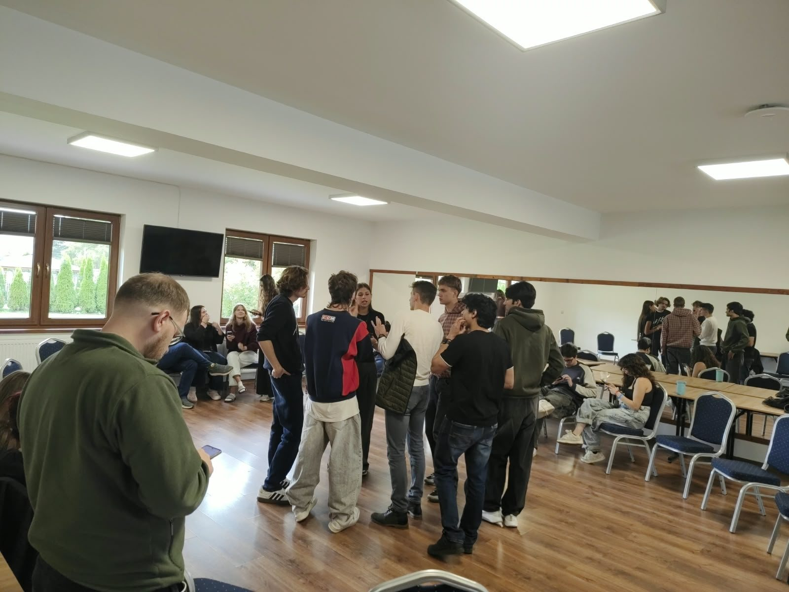
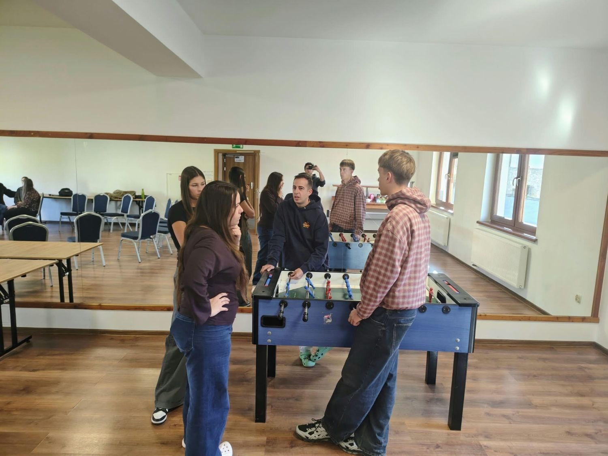

Digital tools
New technologies that are useful in working with young people.
Why this project
The project was started because teachers and youth workers need support to keep up with a digital environment that changes all the time. Young people spend a large part of their time online, on many different platforms and social media.
The COVID-19 pandemic sped up this digitisation even more, moving many parts of education and social life into the virtual world.
What participants explore
New technologies that are useful in working with young people.
Using social media effectively, and safely, for communication and education.
Communicating well with young people in digital spaces.
Recognising online risks early and knowing how to protect young people from them.
Spotting cyberbullying and preventing it through youth education.
Online safety first
Youth workers need the skills to recognise online threats early, and to prevent them through education.
Young people’s growing online activity brings many risks. Standard formal education still has big gaps in this area, so the training pays special attention to online safety: safe use of social media, cybersecurity and combating cyberbullying.
The twelve lessons on this website grew out of that focus.
Our goal
We want to give teachers and youth workers comprehensive training and the tools they need to use technology well in their work with young people.
Participants from different countries exchange experience and good practice, learn to use a range of digital tools, and build strategies for using social media for communication and education.
By the end, they’re better prepared for the challenges and the opportunities of the modern digital world.
Moments from Poronin
Workshops, challenges, team-building and sunsets in the mountains.





